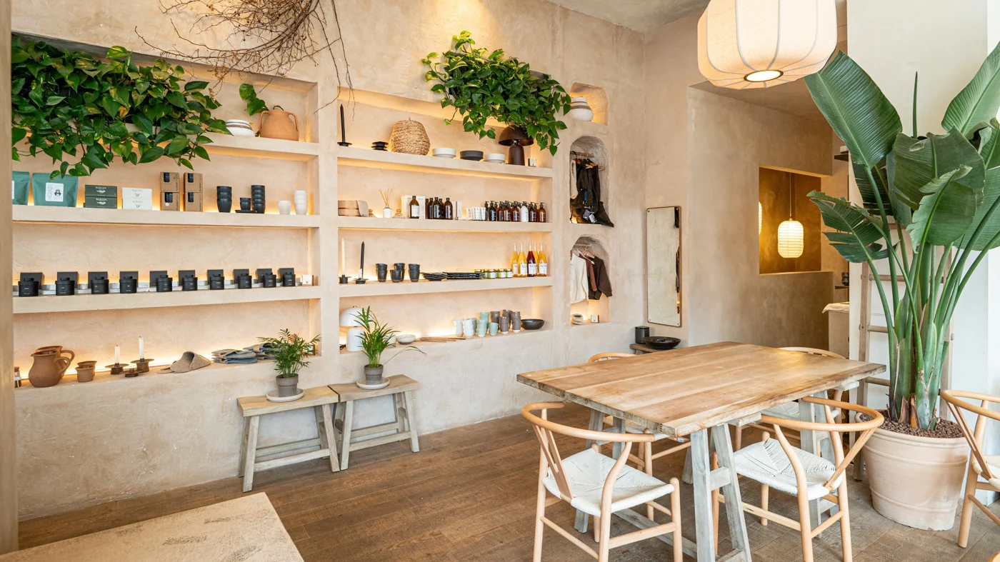

LOAFT Brighton
Café · The Lanes
A calm concept store and Wolfox coffee bar in the South Lanes, bringing together ceramics, natural textures, coffee and freshly baked pastries.
15c Prince Albert Street, Brighton
Dogs are welcome with no extra fee, subject to space and availability at busy times.
Photography: @loaft.uk